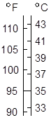
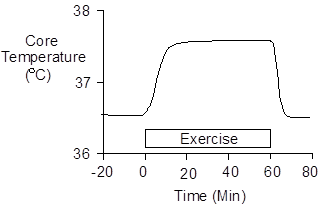

Exercise > Temperature Regulation
Two different units are used to report temperature. One is degrees Celsius (°C), also called centigrade, invented by the Swedish astronomer Anders Celsius (1701 – 1744). The other unit is degrees Fahrenheit (°F), invented by the Dutch physicist D.G. Fahrenheit (1686 - 1736).
The formula for conversion is
°C = (5/9) * (°F – 32)

 Core Temperature During Exercise
Core Temperature During Exercise
Core temperature rises rapidly during exercise (Saltin and Hermansen 1966) as shown below.

Sympathetic nerve activity increases as exercise begins. This stimulates cutaneous alpha receptors, causing the skin to vasoconstrict. Heat production far exceeds heat loss and the core temperature increases rapidly.
Increased core temperature triggers cutaneous vasodilation and sweating. Core temperature continues to rise until heat loss is equal to heat production. A new steady-state is established at an elevated core temperature.
Malignant Hyperthermia
Temperature regulation fails at core temperatures at or just above the maximum core temperatures observed in exercise. In fact, severe exercise, a hot environment and malignant hyperthermia (also called heat stroke) often coexist.
Malignant hyperthermia is characterized by very high core temperatures and an absence of sweating (Ferris at. al. 1938).
Ferris et. al. (1938) observed that hyperthermic patients with a core temperature below 106 °F were conscious. None of these patients died.
Patients with a core temperature of 106 °F to 112 °F were first seen in a stupor or coma. Mortality was high in this group in spite of the treatment. Gauss and Meyer (1917) observed a mortality rate of 81% in patients first seen with a core temperature of 110 °F or greater, in spite of aggressive treatment with cold water.
References
Davies, C.T.M., J.R. Brotherhood and E. Zeidfard. Temperature regulation during severe exercise with some observations on effects of skin wetting. J. Appl. Physiol. 41:772-776, 1976.
Ferris, E.B., Jr., M.A. Blankenhorn, H.W. Robinson and G.E. Cullen. Heat stroke: clinical and chemical observations on 44 cases. J. Clin. Invest. 17:249-262, 1938.
Gauss, H. and K.A. Meyer. Heat stroke: report of one hundred and fifty-eight cases from Cook County Hospital, Chicago. Amer. J. Med. Sci. 154:554-564, 1917.
Saltin, B. and L. Hermansen. Esophageal, rectal, and muscle temperature during exercise. J. Appl. Physiol. 21:1757-1762, 1966.